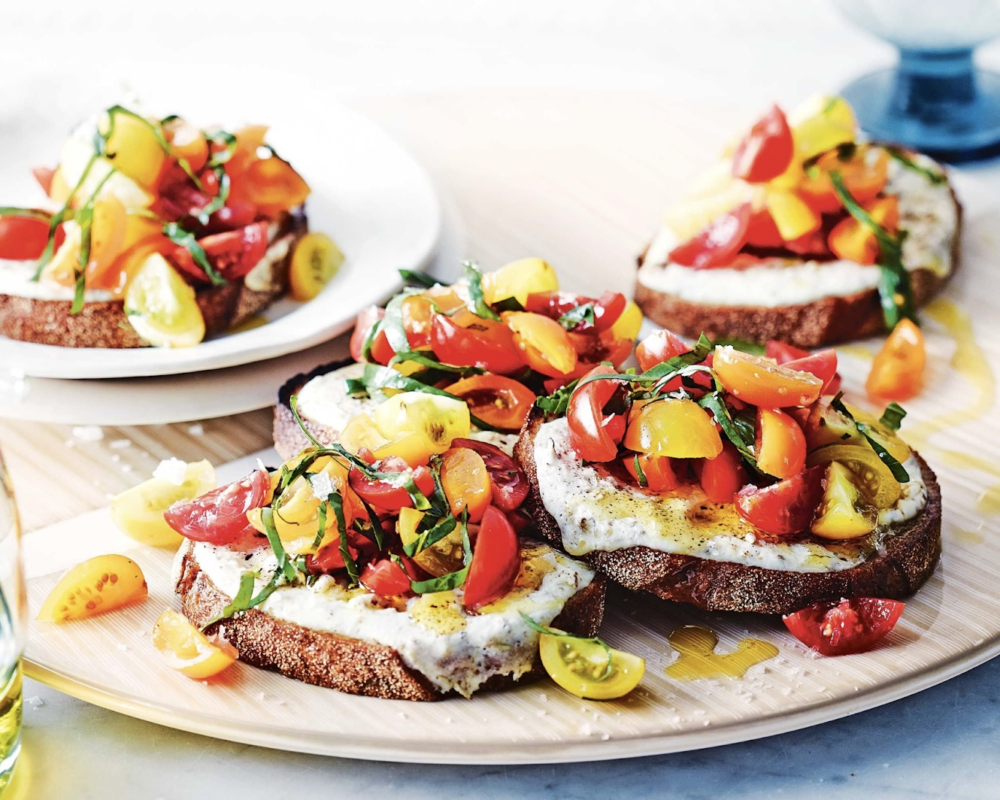

INGREDIENTS :
- 4 bread slices (preferibly pagnotta bread)
- 1 tsp of dried oregano
- 1 tsp of dried thyme
- 2 tblsp olive oil, plus extra to drizzle
- 250 g of mixed cherry tomatos tomatoes (red and yellow)
- 2 tsp of sugar
- 1/2 garlic clove, crushed
- 2 tablespoons apple cider vinegar
- 1/2 cup basil leaves, shredded
- 1 cup of fresh ricotta
- 1 tsp of salt
PROCEDURE
- Place the bread on a grill to medium-high and toast with olive oil,
- Turn the bread halfway for 3-4 minutes until golden.
- Meanwhile, combine tomatoes, sugar, garlic, and vinegar in a bowl.
- In another dish, combine fresh ricotta, 1 tsp of salt, and the dried herbs, then spread the mixture evenly over the toast.
- Done!
- To serve, divide tomato mixture among the ricotta toasts and top with basil and a drizzle of olive oil